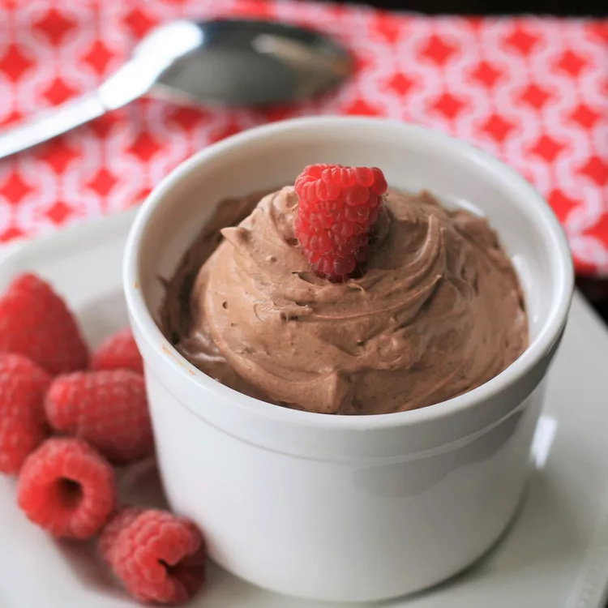

Quick Keto Chocolate Mousse

Description
Start by beating the cream cheese with a hand mixer until it's light and
fluffy. Lower the speed and slowly incorporate the vanilla and heavy
cream. Add the sweetener, cocoa powder and salt and continue mixing until
it reaches a mousse-like consistency.
Ingridients
- 3 ounces cream cheese, softened
- ½ cup heavy cream
- 1 teaspoon vanilla extract
- ¼ cup powdered zero-calorie sweetener
- 2 tablespoons cocoa powder
- 1 pinch salt
Steps
-
Beat cream cheese in a large bowl with an electric mixer until light and
fluffy. Turn mixer to low speed and slowly mix in heavy cream and
vanilla.
-
Mix in sweetener, cocoa powder and salt until well incorporated. Turn
mixer to high and mix until light and fluffy, 1 to 2 minutes more.
- Serve immediately, or refrigerate for later.